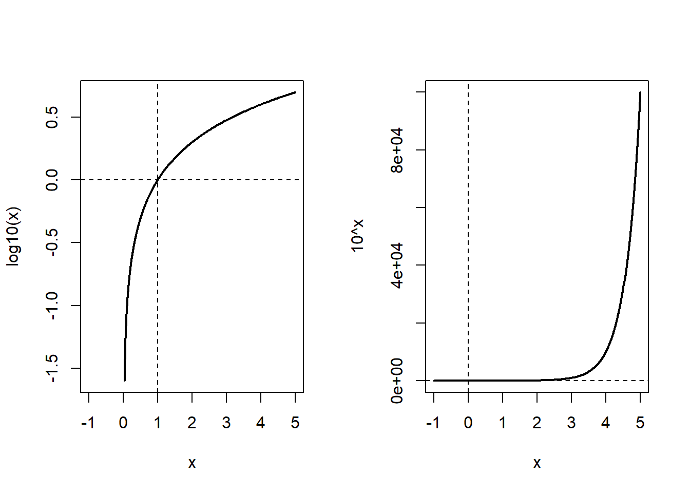
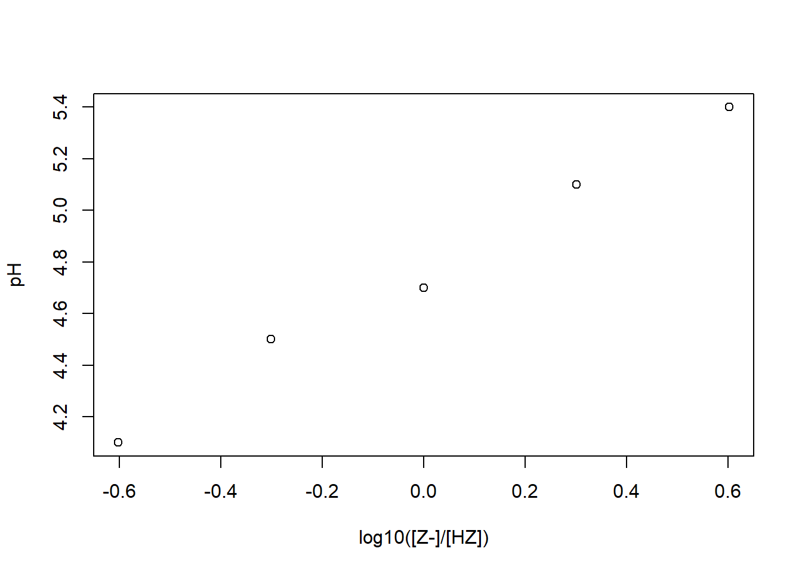
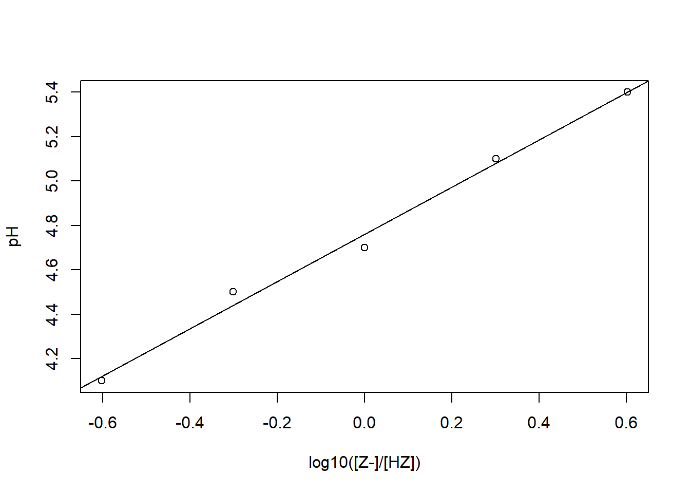

10^3[1] 1000Dit portfolio-onderdeel is gekoppeld aan het vak Chemie van het leven, waarbij je veel met pH-waarden werkt. Hierbij heb je ongetwijfeld al gerekend met de logaritme, maar dat is niet de eerste keer dat je deze functie bent tegengekomen in de studie. In de vorige portfolio-opdracht kwam deze naar voren bij het bespreken van entropie. Dit is geen toeval: de logaritme is een belangrijke functie, die toepassingen heeft in meerdere contexten.
We herhalen de rekenregels van de logaritme kort, zodat je deze bij de hand hebt. Mogelijk ken je deze al goed, maar het doel hierbij is dat we er echt een interpretatie aan geven en niet alleen gebruiken. Vervolgens leiden we het aankomende practicum in, waarbij je tegelijkertijd oefent met coderen.
Net als bij de vorige portfolio-opdracht, volgt een theoretisch deel. Hierbij zul je een toepassing van de logaritme in het vakgebied evo-devo bestuderen.
We komen de exponentiële functie tegen als we naar vermenigvuldingsprocessen kijken. Als we het grondgetal \(a\) noemen, en we willen weten wat er gebeurt als we dit \(x\) keer met zichzelf vermenigvuldigen, kunnen we dit als volgt noteren: \[f(x) = a^x.\] Zo kunnen we bijvoorbeeld de derde macht van 10 noteren:
10^3[1] 1000Een logaritme doet precies het omgekeerde: deze vertelt je hoeveel keer je een bepaald getal moet vermenigvuldigen om bij een ander getal uit te komen.
Sommige logartimes kommen veel voor, bijvoorbeeld die met grondgetal 10. Hiervoor bestaat in R de functie log10(), waarbij je tussen de haakjes aangeeft van wel getal je de logartime wilt bepalen.
log10(1000)[1] 3Met dit voorbeeld kunnen we zien dat de genoemde functies voor hetzelfde grondtal \(a\) elkaars inverse zijn. Als je eerst de exponent van een getal neemt en daarna de logaritme, kom je terug bij het getal waarmee je begon. Hetzelfde geldt voor wanneer je eerst de logaritme neemt en dan de exponent. Voor alle grondgetallen \(a\) en machten \(x\) geldt dus:
\[a^{\log_a(x)} = x \quad \text{en} \quad \log_a(a^x)=x \]
Merk op dat een logaritme niet altijd een geheel getal oplevert:
log10(1500)[1] 3.176091Machten en logaritmen zijn praktisch omdat ze processen beschrijven die met een vaste factor toe- of afnemen. Een macht is een compacte manier om een herhaalde vermenigvuldiging met diezelfde factor te noteren.
Als je een logaritme bepaalt, bereken je hoe vaak je die factor hebt toegepast. De notatie \(\log_{10}(1000)\) lees je dus als: “hoe vaak moet ik de factor 10 toepassen om van 1 bij 1000 uit te komen?” Vandaar geldt \(\log_{10}(1000) = 3\).
We kunnen ook een ander grondgetal (en dus een andere vermenigvuldigingsfactor) gebruiken dan 10. Bij grondgetal 2 hoort de factor 2. Dit beschrijft dus een verdubbeling. Dit kom je bijvoorbeeld tegen bij een cel die zich steeds in tweeën deelt: hoeveel delingsrondes zijn nodig om van 1 naar 1024 cellen te komen?
log2(1024)[1] 10Merk op dat we hier de functie log2() hebben gebruikt. Deze functie bestaat omdat de logaritme met grondgetal 2 ook veelvoorkomend is. Om algemene logaritmes uit te rekenen, kunnen we de functie log() bepalen. Hierbij moeten we dus nog specificeren welk grondgetal we gebruiken:
log(1000, 3) # logaritme van 1000 met grondgetal 3[1] 6.28771log(x=1000, base=3) # explicietere notatie[1] 6.28771In onderstaande rekenregels gebruiken we de algemene notatie \(a\) en \(b\) als grondgetallen, en \(x\) en \(y\) als machten.
Rekenregels voor machten
\(a^x \cdot a^y = a^{x+y}\)
\(\frac{a^x}{a^y} = a^{x-y}\)
\((a^x)^y = a^{xy}\)
\(a^{-x} = \frac{1}{a^x}\)
\(a^{\frac{x}{y}} = \sqrt[y]{10^x}\)
Hieruit volgen direct de rekenregels voor de logaritme.
Rekenregels voor logaritmen
\(\log_a(xy) = \log_a(x) + \log_a(y)\)
\(\log_a\left(\frac{x}{y}\right) = \log_a(x) - \log_a(y)\)
\(\log_a(x^y) = y\cdot \log_a(x)\)
We kunnen de logaritme met basis 10 en de bijbehorende machtsfunctie als volgt visualiseren:
x <- seq(-1, 5, length.out = 200) # discretisatie van de x-as
par(mfrow = c(1,2)) # maak twee plots
# plot log10(x)
plot(x, log10(x), type = "l", lwd = 2,
xlab = "x", ylab = "log10(x)")Warning in xy.coords(x, y, xlabel, ylabel, log): NaNs producedabline(h = 0, lty = 2) # horizontale lijn op y=0
abline(v = 1, lty = 2) # verticale lijn op x=1
# plot 10^x
plot(x, 10^x, type = "l", lwd = 2,
xlab = "x", ylab = "10^x")
abline(h = 1, lty = 2)
abline(v = 0, lty = 2)
Vraag B.1 Bekijk de grafiek.
jouw antwoord:
De concentratie van \(\ce{H^+}\) in waterige oplossingen varieert van ongeveer 1 mol/L (sterk zuur) tot \(10^{-14}\) mol/L (sterk basisch). Dit is een enorm bereik van veertien ordes van grootte. We zijn in zulke situaties gewend om waardes dan af te ronden tot de dichtstbijzijnde macht van tien. Een concentratie van 0.0003 mol/L heeft bijvoorbeeld orde van grootte \(10^{-4}\). Dat is handig om snel een gevoel te krijgen voor hoe klein deze concentratie is, maar de gerapporteerde waarde is wel erg grof: 0.0001 en 0.0005 mol/L krijgen zo dezelfde orde van grootte, terwijl ze een factor 5 schelen.
De pH doet in feite hetzelfde als het bepalen van een orde van grootte: hij drukt de concentratie uit als een macht van tien. Een verschil is dat we de pH gewoonlijk niet afronden naar een geheel getal: de pH is de (niet-afgeronde) exponent zelf. Zo kunnen we met pH=7.34 een fijner onderscheid noteren dan met orde van grootte \(10^{-7}\). Op een lineaire schaal zouden kleine verschillen dus volledig wegvallen, terwijl we weten dat zulke verschillen tussen bijvoorbeeld pH-waarden 7 en 7.5 biologisch erg relevant zijn.
De logaritme lost dit op door een vermenigvuldigingsverhouding om te zetten in een optelbaar verschil: \[\log(a \cdot b) = \log a + \log b.\]
We hebben bij het vorige portfolio-onderdeel ook gezien dat dit een gunstige eigenschap is! Eerder ging het om het optellen van entropie; nu gaat het om het schalen van data met een groot bereik.
De definitie van de pH is dankzij deze eigenschap als volgt:
\[\text{pH} = -\log_{10}[\text{H}^+]\]
Vraag B.2 Als de H⁺-concentratie met een factor 10 daalt, wat gebeurt er dan met de pH? En als de concentratie halveert (bijvoorbeeld door verdunning)? Reken beide gevallen uit en leg intuïtief uit waarom een verschil van “1 pH-eenheid” een heel andere betekenis heeft dan een verschil van “1 eenheid concentratie” (mol/Liter).
Jouw antwoord
De zuurgraad van een oplossing wordt bepaald door de concentratie protonen (\([\text{H}^+]\)). Deze kan sterk verschillen tussen oplossingen. Het is niet handig om met extreem grote of kleine concentraties te werken. In de praktijk wordt deze concentratie daarom, zoals besproken, op een logaritmische schaal geplaatst.
De pH van een oplossing wordt als volgt gedefinieerd: \[\text{pH} = -\log_{10}[\text{H}^+].\]
Om uit de pH de concentratie te bepalen, gebruiken we de exponentiële functie: \[[\text{H}^+] = 10^{-\text{pH}}\]
Bij het eerste practicum van Chemie van het leven ga je twee oplossingen maken, die we A en B noemen. Hierbij moet oplossing A een 150 mL 0.20 M Na-acetaatoplossing zijn. Voor de voorbereidende opdracht in Labbuddy heb je bepaald hoeveel natriumacetaat je moest afwegen (of als je dit nog niet gedaan hebt, kun je de komende berekeningen overnemen in Labbuddy). In deze opdracht oefen je op een laagdrempelige manier met de logica achter coderen. Daarbij gebruiken we de voorbereidingsopdrachten en geven we alvast een voorproefje van het aankomende practicum. Je kunt de berekeningen die je hierbij uitvoert ook gebruiken bij het schrijven van je labjournaal.
Zeg dat we 150 mL van een 0.2 M \(\ce{HCl}\)-oplossing maken. Het moleculair gewicht van \(\ce{HCl}\) is 136.06 gram \(\ce{mol}^{-1}\).
In R kunnen we alvast wat benodigde variabelen noteren:
vol_gewenst <- 150
conc_gewenst <- 0.20
MW <- 136.08De pijl <- wijst een naam toe aan hetgeen rechts van de pijl. We kunnen nu deze namen gebruiken voor verdere berekeningen. Als we bijvoorbeeld vol_gewenst aanroepen, vinden we de toegewezen waarde terug:
vol_gewenst[1] 150Vraag B.3 Bereken de benodigde massa.
massa_nodig <- 0 # vervang met je berekening!
massa_nodig # print je antwoord[1] 0In de praktijk is het lastig om een massa zo precies af te wegen. De massa die je afweegt, zit waarschijnlijk wel in de buurt van de benodigde hoeveelheid. In het vervolg van deze opgave gaan we ervanuit dat het afwegen niet perfect heeft plaatsgevonden, en we nemen aan dat de afgewogen massa getrokken is uit een normaalverdeling met als gemiddelde de echte massa en een kleine standaarddeviatie.
massa_gewogen <- rnorm(1, mean = massa_nodig, sd = 0.05)
massa_gewogen[1] 0.08378856Vraag B.4 Denk terug aan de vorige portfolio-opdracht over verdelingen. Bedenk waarom bovenstaande benadering van de afgewogen massa redelijk is.
Jouw antwoord
Vraag B.5 Hoe kun je het volume demiwater schalen om alsnog de juiste concentratie te verkrijgen?
vol_aangepast <- 0 # vervang met je berekening!
round(vol_aangepast, 2) # print de uitkomst met 2 decimalen[1] 0Bovenstaande berekening kun je in de Methode-sectie van je labjournaal plaatsen.
Vervolgens ga je de pKz van oplossingen A en B berekenen, met behulp van de algemene formule:
\[\text{pH} = \text{pKz} + \log_{10}\left(\frac{[\text{Z}^-]}{[\text{HZ}]}\right), \tag{B.1}\]
waarbij het zuur wordt aangeduid met \(\text{HZ}\) en de geconjugeerde base met \(\text{Z}^-\).
Vraag B.6 Bekijk Vergelijking B.1 goed. Wat gebeurt er met de pH als de verhouding van de concentratie van het zuur ten opzichte van de concentratie van de base kleiner wordt?
Stel je voor dat de pH van oplossing A gelijk is aan 7. Neem verder aan dat de concentratie van het zuur 0.2 is.
pH_A <- 7
Z_A <- 0.2De concentratie van de geconjugeerde base kan dan worden bepaald via
\[[\ce{HZ}]=[\ce{OH^-}]=10^{-(14-pH)}.\] Deze algemene formule kunnen we als volgt coderen:
HZ_A <- 10^(-(14 - pH_A))
HZ_A[1] 1e-07Vraag B.7 Codeer nu zelf de algemene uitdrukking die je gebruikt om de pKz van oplossing A te bepalen.
pKz_A <- 0 # vervang met je berekening!
pKz_A[1] 0Je hebt de pKz nu berekend uit één meting. Maar bekijk de formule eens goed:
\[\text{pH} = \text{pKz} + \log_{10}\left(\frac{[\text{Z}^-]}{[\text{HZ}]}\right)\]
Vraag B.8 Als je \(x = \log_{10}([\text{Z}^-]/[\text{HZ}])\) noemt, welke bekende vorm (\(y = a + bx\)) herken je dan in deze formule? Wat stellen \(a\), \(b\) en \(y\) hier voor? Welke waarden verwacht je dat deze aannemen?
Jouw antwoord
Vraag B.9 Leg in eigen woorden uit waarom dit verband inzichtelijk is. Koppel de formule aan het doel en de methode van het practicum: wat verander je? Wat meet je? En wat voor inzichten geeft het verband?
Jouw antwoord
Stel dat je op verschillende momenten tijdens het toevoegen van HCl de pH had genoteerd. Je kunt dan het verband tussen \(x\) en \(y\) plotten. Dit kan er bijvoorbeeld zo uitzien:
ratio <- c(4, 2, 1, 0.5, 0.25) # [Z-]/[HZ] op vijf momenten
pH_gemeten <- c(5.4, 5.1, 4.7, 4.5, 4.1) # fictieve metingen
x <- log10(ratio)
plot(x, pH_gemeten, xlab = "log10([Z-]/[HZ])", ylab = "pH")
We hebben dit verband benaderd met de functie \(y= a + bx\) voor onbekende waarden van \(a\) en \(b\). De functie bepaalt de meest waarschijnlijke waarden voor deze parameters. Hierover leer je meer in een latere portfolio-opdracht.
We gebruiken deze functie en plotten de lijn met de parameterwaarden die hieruit komen.
model <- lm(pH_gemeten ~ x)
plot(x, pH_gemeten, xlab = "log10([Z-]/[HZ])", ylab = "pH")
abline(model)
Vraag B.10 Waarom geeft het schatten van de pKz uit een lijn door meerdere punten waarschijnlijk een betrouwbaardere waarde dan het berekenen van de pKz uit slechts één meting?
Denk aan het statistiekportfolio! Wat was bij de vorige opdracht de meerwaarde van een grotere steekproefgrootte?
Vraag B.11 Je hebt nu nog een nuttige eigenschap van de logaritme gezien. Beschrijf deze eigenschap in eigen woorden, en leg uit hoe we deze kunnen toepassen in practica.